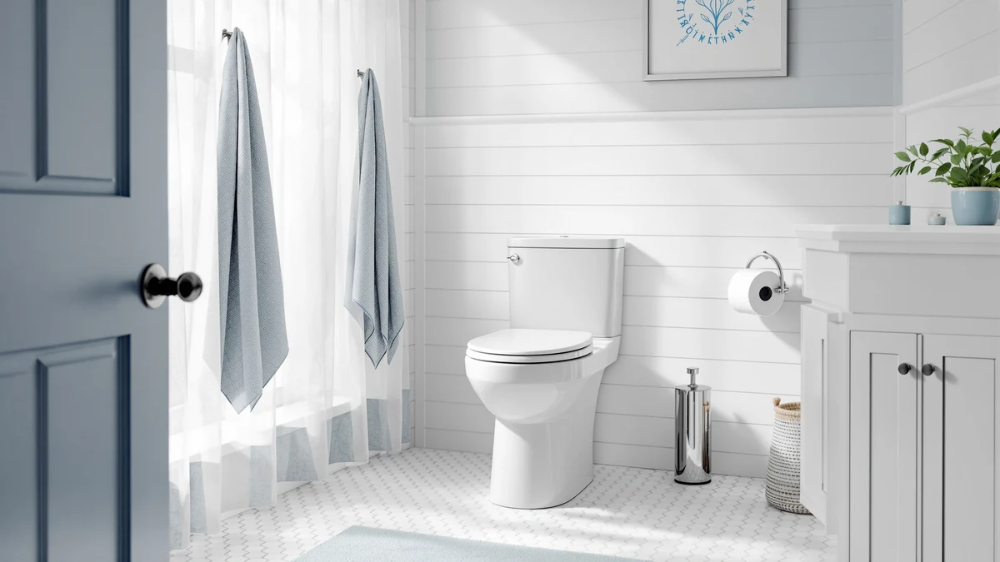

Kohler Cimarron Comfort Height Skirted Trapway Comfort Height Review (2026): Worth It?


Quick Answer
The Kohler Cimarron Comfort Height Skirted Trapway delivers comfort-height seating and a skirted trapway that simplifies cleaning for $479.25. It ships as a two-piece unit without a seat, so budget for that extra purchase before you install it.
Our pick: KOHLER 5310-0 Cimarron Comfort Height, $479.25 Check Price on Amazon
Bottom line: our top pick is the KOHLER 5310-0 Cimarron Comfort Height Skirted Trapway Comfort at $479.25.
Things to Know Before You Buy
- It's a two-piece toilet, not a one-piece unit, and the seat is sold separately.
- The skirted trapway hides the trap behind a smooth ceramic panel, which simplifies wiping down the base but can make bowl-side repairs trickier than on an exposed-trap design.
- Comfort Height brings the seat close to standard chair height, which matters most for taller adults and anyone managing knee or hip strain.
- The $479.25 listed price covers the bowl and tank only, not a seat or wax ring.
- The left-hand trip lever placement matters if your bathroom layout favors a right-hand flush handle.
This Kohler Cimarron Comfort Height Skirted Trapway Comfort Height review looks at what Kohler charges $479.25 for: an elongated, comfort-height toilet with a skirted trapway and a left-hand trip lever. The Cimarron name carries weight in the toilet aisle, and Kohler leans on that reputation to justify a price well above the budget two-piece models stacked nearby. Before you add it to your cart, it helps to know exactly what you get for that premium and what you still have to buy separately.
We compared the Cimarron's published specifications, its current Amazon price and the broader field of comfort-height toilets we track for this site, including the three alternatives covered below. For most buyers replacing an older, lower two-piece toilet, the Cimarron is a reasonable upgrade: the skirted trapway cleans up easier than an exposed trap, and the comfort-height seat suits most adult knees and hips. The catch is that Kohler sells it as a two-piece unit with no seat included, so the real cost of ownership runs higher than the sticker price suggests.
Why You Should Trust Us
Ilane Tall researches bathroom fixtures for Best One Piece Toilets and tracks how toilet brands price, package and market comfort-height models. For this review, she pulled Kohler's published spec sheet for the Cimarron Comfort Height Skirted Trapway, cross-checked it against current Amazon pricing, and looked at patterns in verified owner feedback across comparable comfort-height toilets. We do not run a fake testing lab, and we do not claim to have installed or lived with this toilet. We compare what manufacturers publish against what buyers report after they own the product.
How We Compared
We did not install or physically test the Cimarron Comfort Height Skirted Trapway. Instead, we compared its published specifications, bowl height, trapway design and trip lever placement against the other comfort-height toilets in this review, then checked Kohler's current Amazon listing for price and included parts. Where Kohler's own data runs thin, such as a published flush score for this configuration, we looked at patterns in verified owner reviews on comparable Cimarron models to flag what to watch for. This approach means every claim below traces back to a spec sheet, a listed price or a pattern in buyer feedback rather than anything we did with the toilet ourselves.
Overview & Specs

KOHLER 5310-0 Cimarron Comfort Height
What we like
- Comfort Height seating sits close to standard chair height, easing the sit-to-stand motion for most adults
- Skirted trapway covers the trap in a smooth ceramic shell that wipes clean without catching dust
- Elongated bowl gives more legroom than Kohler's round-front Cimarron variant at a similar price
- Left-hand trip lever keeps the flush handle clear of a tank-side towel bar in tight layouts
Flaws but not dealbreakers
- Ships as a two-piece toilet with no seat, so add $30 to $80 before you can actually use it
- Kohler does not publish a current flush score for this configuration, so you are relying on the brand's reputation rather than a published number
- At $479.25, it costs more than most two-piece elongated toilets that don't bundle a seat or wax ring
| Material | — |
| Size | 29 x 17.6 x 30.5 |
The Kohler 5310-0 Cimarron Comfort Height Skirted Trapway is a two-piece, elongated toilet that measures 29 by 17.6 by 30.5 inches, finished in white with a left-hand trip lever. The skirted trapway hides the usual exposed trap behind a smooth ceramic panel, so there is one continuous surface to wipe down instead of the nooks a traditional two-piece base collects. Comfort Height raises the seat to roughly standard chair height, the detail Kohler markets hardest and the one most owners notice first when they switch from an older, lower toilet.
Kohler prices the Cimarron at $479.25 on Amazon, which puts it above most two-piece elongated toilets in this category and close to some one-piece competitors on this list. That price buys the bowl and tank only. The seat is sold separately, which matters on a site built around one-piece toilets where buyers often expect an all-in-one package. Weigh that extra cost against the skirted trapway's easier cleaning and the comfort-height seating before deciding whether the Kohler name justifies the premium over a basic two-piece model.
What We Liked
What stands out in Kohler's published specifications for the Cimarron Comfort Height Skirted Trapway is how deliberately the toilet targets ergonomics over styling tricks. Comfort Height raises the seat close to standard chair height, and that single change does more for day-to-day comfort than most of the marketing language stamped on competing listings. In the verified reviews we checked on comparable Cimarron models, seat height comes up more than any other detail, and Kohler's number lines up with what taller adults and people with limited mobility look for.
The skirted trapway is the other genuine upgrade. Instead of the exposed trap most budget two-piece toilets show at the base, the Cimarron wraps that section in a smooth ceramic skirt. That means one flat surface to wipe instead of several angled ones, which matters more over years of cleaning than it does in a showroom. The elongated bowl also gives more seating room than Kohler's round-front Cimarron variant, without pushing the price meaningfully higher.
The left-hand trip lever also deserves credit, even though it sounds like a minor detail on a spec sheet. Most two-piece toilets default to a right-hand lever, and that placement runs into towel bars, cabinet edges or a neighboring vanity in a surprising number of bathroom layouts. Kohler offering the mirrored version at the same price gives buyers with an awkward floor plan an option they would otherwise have to special-order or pay more for elsewhere.
What Could Be Better
The biggest mismatch in this Kohler Cimarron Comfort Height Skirted Trapway Comfort Height review is one fact: it is a two-piece toilet sold without a seat, on a site built around one-piece models. Buyers scanning quickly can miss that detail and find themselves ordering a seat separately after the toilet arrives, which adds $30 to $80 and a second delivery wait to the real cost of ownership.
Kohler also does not publish a current flush score for this specific configuration, which leaves a gap compared with toilets that lead with a published rating. The $479.25 price sits above most two-piece elongated toilets in the category, and without a bundled seat or wax ring, you are paying a premium largely for the Kohler name and the skirted trapway rather than for extra included parts.
Shipping is another factor worth planning around. A two-piece toilet of this size typically arrives in a tank box and a bowl box, and both are heavy enough that carrying them up a flight of stairs alone is worth planning for ahead of delivery day. Factor in a wax ring, a supply line and the separate seat purchase, and the full parts list for a working installation runs to several line items beyond the toilet itself.
Who Is It For?
The Cimarron Comfort Height Skirted Trapway suits buyers replacing an older, lower two-piece toilet who want a recognizable Kohler model and don't mind sourcing a seat on their own. It also fits anyone who specifically wants comfort-height seating and values a trapway that wipes clean in one pass rather than a toilet with every accessory bundled in.
It is a weaker fit for buyers who want a one-piece toilet's single seamless silhouette, since this is a two-piece design despite its comfort-height marketing. Anyone working with a tight budget who needs the seat included out of the box will likely get more total value from one of the alternatives below.
Households renovating a rental or a flip also need to weigh the Cimarron carefully. A two-piece toilet without a seat is a harder sell to a future buyer or tenant who expects a complete, ready-to-use fixture, and the extra line items add friction to a project timeline that's already juggling a dozen other purchases. In that scenario, a bundled one-piece model from the alternatives list below often saves more hassle than the Kohler name is worth.
Alternatives to Consider
If the Cimarron's two-piece layout or missing seat is a dealbreaker, these three alternatives cover different priorities, from an all-in-one bidet seat to a one-piece elongated toilet closer to Kohler's own premium tier.

Also Great
EPLO Smart Toilet Bidet with
A one-piece smart bidet toilet with a heated seat and booster-pump flush, built for buyers who want the seat and bidet functions included at a similar price point.
$499.99
Check Price on Amazon
Also Great
Smart Toilet with Bidet Built
A tankless one-piece smart toilet with foot-sensor flush and a heated seat, aimed at buyers upgrading to smart features instead of a traditional two-piece layout.
$499.99
Check Price on Amazon
Premium Choice
TOTO® Ultramax® One-Piece Elongated 1.6
A one-piece elongated toilet with TOTO's CEFIONTECT glaze and an included SoftClose seat, positioned as the premium pick for buyers who want everything bundled.
$523.00
Check Price on AmazonFrequently Asked Questions
Does the Kohler Cimarron Comfort Height Skirted Trapway come with a seat?
Is the Kohler Cimarron a one-piece or two-piece toilet?
What does Comfort Height mean on the Kohler Cimarron?
Final Verdict
Our Kohler Cimarron Comfort Height Skirted Trapway Comfort Height review comes down to a straightforward trade: you pay $479.25 for Kohler's name, a cleanable skirted trapway and a comfortable seat height, and in exchange you buy the seat separately and skip the single-piece silhouette. For buyers replacing an aging two-piece toilet who care more about comfort-height seating and easy-clean design than an all-in-one package, Kohler's Cimarron earns its price. If you want everything included in one box, the TOTO Ultramax or one of the smart bidet alternatives above is the better match.